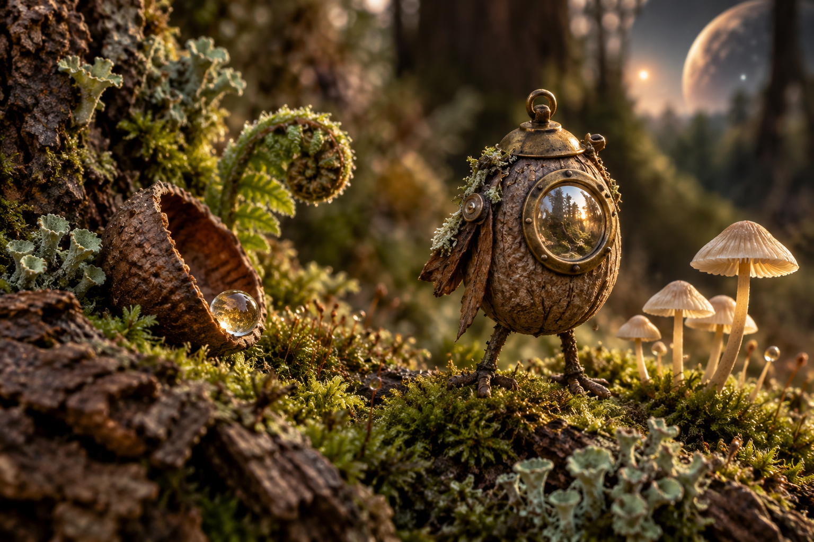

01 / object combination
Bring two things together
Result
Select two objects to preview a pair.
Naturalist's folio / specimen 04
01 / object combination
Select two objects to preview a pair.

02 / pictorial hint
Follow the root hollow to the amber shell and moss ring.
03 / planet chapters
A selected world is only a route preview.